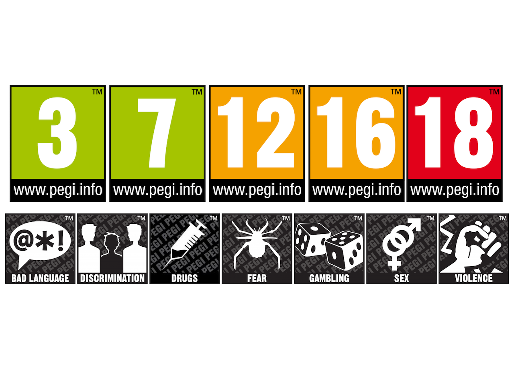

31 lipca 2018
O PEGI, ESRB czy USK napisano już chyba niemal wszystko, ale chciałbym dołożyć tu swoje trzy grosze, gdyż całkiem niedawno zacząłem bacznie przyglądać się ocenom klasyfikacji gier. Podobnie jak spora część grupy docelowej Pixela dorobiłem się już potomka. I podobnie jak zapewne większość z nas zamierzam świadomie wprowadzać go w świat elektronicznej rozrywki.

Kilka miesięcy temu, kiedy junior zbliżał się do swych piątych urodzin, zauważyłem, że z coraz większą uwagą przygląda się jak tata gra w gry. Czasem sam nawet próbował na konsoli postawionej w sklepie z zabawkami lub gdzieś na lotnisku. To był sygnał, by dać mu wreszcie w domu pada do ręki. Na pierwszy ogień poszedł NES Classic Mini i tytuły takie jak Pac-Man, Super Mario Bros, czy też Galaga.
Znakomita większość gier oznaczonych 3+ to gry sportowe, strategie ekonomiczne oraz wszelkiego rodzaju "ścigałki". Faktem jest, że nie zawierają żadnych elementów seksu, używek, strachu, zaś przemoc ogranicza się do sfaulowania piłkarza przeciwnej drużyny lub wypchnięcia z toru innego kierowcy. W żadnym wypadku tych gier nie nazwałbym jednak tytułami dla dzieci. Mają zbyt wysoki poziom wejścia. Mnie, staremu wyjadaczowi, który zjadł zęby na FIFIE 98, PESie (kiedy jeszcze nosił nazwę ISS Pro), czy też dwóch pierwszych częściach Gran Turismo, zajęło dobrych kilkadziesiąt minut, jak nie kilka godzin, by opanować sterowanie w najnowszych odsłonach piłek nożnych, Project: Cars, albo GT Sport.
Z kolei spora część gier, które w powszechnej świadomości uchodzą za tytuły dla najmłodszych, ma oznaczenia 7+, a czasem nawet 12+. Mam tu na myśli przede wszystkim całą serię Lego oraz gry na podstawie kinowych kreskówek Disney'a lub DreamWorks (np. Auta czy Kung Fu Panda). Jedocześnie dziwi mnie fakt oznaczania etykietką 7+ gier tylko pod VR (Robinson: The Journey, Battlezone, Rigs Mechanized Combat League), podczas gdy Sony nie zaleca używania hełmów rzeczywistości wirtualnej osobom poniżej 12 roku życia, a Samsung i Oculus podnoszą ten limit do 13 lat.
Koniec końców, w chwili obecnej mamy z synem dwa tytuły, które wspólnie ogrywamy: kupiony na fali tymczasowej fascynacji dinozaurami Lego: Jurassic World (PEGI 7), oraz Snoopy's Grand Adventure (PEGI 3). I tu dochodzimy do kolejnego paradoksu. Mądrzy panowie w garniturach widząc na okładce tyranozaura z rozdziawionym pyskiem, goniącego dwoje bohaterów na motocyklu, bez namysłu przykleili plakietkę ostrzegającą przed strachem. Sympatyczny piesek z Fistaszków nic takiego nie posiada, a jednak młody bardziej boi się spaść z platformy w przepaść lub zostać trafionym przez plastikowego robota, niż być zjedzonym przez wyskakującego znienacka dinozaura.
Podsumowując, z mojego doświadczenia wynika, że kierując się wyłącznie klasyfikacją PEGI, nie jesteśmy w stanie wybrać dobrej gry dla naszego dziecka. Owszem, dodatkowe ikonki informujące o zawartości seksu, przemocy, narkotyków, itp. pomogą wykluczyć nieodpowiednie tytuły. Jednak ich brak, a zwłaszcza zielony prostokąt PEGI 3, nierzadko mniej zorientowanego rodzica wprowadzi w błąd i zamiast sprawić frajdę młodemu adeptowi elektronicznej rozrywki, skutecznie go zniechęci przez zbyt wysoki poziom trudności.